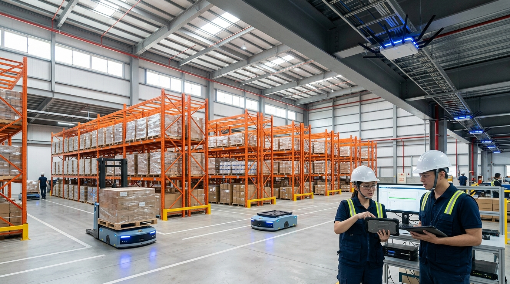

在台灣，要找一家同時具備企業辦公室網路規劃與智慧倉儲工業級無線網路能力的系統整合商並不容易。蓋斯克科技（ZoneTech）自 2015 年成立以來，已累積超過 500 家企業客戶，從百人辦公室、跨樓層商務中心，到 AGV 自動化倉儲，提供完整的網路與資訊基礎建設服務。
蓋斯克科技是誰？
蓋斯克科技有限公司（ZoneTech）總部位於台灣，是專業的企業級網路與資訊整合服務商。創辦人黃俊凱（Gask Huang）帶領團隊，從最基礎的辦公室網路規劃起家，逐步發展出涵蓋 NAS 儲存、IT 委外維護、工作站客製、設備租賃、資料救援的全方位服務體系。
不同於傳統 SI 僅做一次性建置，ZoneTech 強調「長期託管」的服務模式——從網路規劃建置完成後，持續提供遠端監控、定期健檢與即時支援，確保企業 IT 環境穩定運作。
企業發展沿革
蓋斯克科技成立
FIBARO 智慧系統銀質獎章
QNAP 原廠授權服務認證 · MikroTik MTCNA 認證
Ubiquiti UEWA 認證
服務企業超過 500 家
智慧倉儲無線網路事業正式啟動
核心服務項目
企業辦公室網路
大坪數 WiFi、跨樓層、地下室、商務中心、會議直播網路 — 以 UniFi 生態系為核心
智慧倉儲無線網路
2026 年新事業線，Moxa 工業級 AP + RF 現場勘測 + AGV 漫遊驗收 + 月費託管
NAS 雲端儲存
QNAP、Synology、FreeNAS 企業級建置與備份規劃
IT 委外合約
企業資訊委外維護、遠端即時支援、定期健檢報告
4K 影像工作站
高階影像剪輯工作站客製化組裝與調校
設備租賃
筆電、桌機一站起租，彈性滿足企業短期擴編需求
一句話定位：台灣企業級無線網路與資訊整合的系統整合商，正在轉型為「工業無線 SI + 託管服務」的垂直型 ICT 服務商。
為什麼需要專業網路規劃？
許多企業在搬遷辦公室或擴編時，常遇到 WiFi 訊號死角、跨樓層漫遊斷線、視訊會議卡頓等問題。蓋斯克科技的做法是：先到現場進行完整的環境勘測（RF 掃描、障礙物分析、用戶密度估算），再根據實際需求設計 AP 佈建方案，而非單純依賴經驗猜測。
這種「先勘測，後設計」的精神，在 2026 年新推出的智慧倉儲無線網路事業中更加貫徹——倉儲環境的金屬貨架、移動設備、AGV 自動搬運車對 WiFi 漫遊的要求遠高於一般辦公室，必須借助專業的 RF 工具進行現場量測。

智慧倉儲無線網路：2026 新事業線
2026 年 6 月，蓋斯克科技正式啟動智慧倉儲無線網路事業，定位為 「台灣唯一專注智慧倉儲無線網路的系統整合商」。
隨著倉儲自動化與 AGV/AMR 市場快速起飛，WiFi 網路已成為最常見的瓶頸——AGV 在穿梭貨架間的過程中需要毫秒級漫遊切換，傳統商用 AP 無法滿足。ZoneTech 的解決方案以 Moxa 工業級 AP（具 IEC62443 國際資安認證）為核心，搭配：
- RF 現場勘測強制 — 不使用模擬軟體估算，直接到場量測
- AGV 漫遊驗收標準 — 以實際 AGV 運作情境測試切換延遲
- 託管月費制 — 持續監控與維護，鎖定穩定現金流
客戶案例
蓋斯克科技的客戶橫跨多種產業與規模：
- CAPSULE GROUP — 200 坪辦公室，雙 WAN 合併頻寬 + 全區無死角 WiFi
- Happ.小樹屋 — 200 據點共享辦公室，統一 UniFi 管控與遠端管理
- 1921 Coworking Space — 跨樓層 + 電梯間漫遊不中斷
- TeSA 青島學堂 — 直播教室高流量 WiFi 建置
Google 商家評價維持 5 星，客戶常提到的關鍵詞：快速回應、報價合理、工程師親切、售後服務好。
競爭優勢
在台灣 IT 系統整合市場中，ZoneTech 擁有幾個難以複製的定位優勢：
- 跨領域能力 — 同時具備企業辦公室 + 工業倉儲 WiFi 規劃能力的 SI 極為少見
- 技術深度 — 創辦人為開源社群活躍開發者，自研 Hermes Agent AI 代理框架
- 一站式服務 — 網路 + 儲存 + 工作站 + 行銷自動化，降低客戶管理成本
- 託管商業模式 — 從一次性專案轉為持續收入，與客戶建立長期合作關係
團隊與創辦人
黃俊凱（Gask Huang）— 創辦人暨 CEO
深耕企業網路領域超過 10 年，活躍於開源技術社群。除了帶領 ZoneTech 的 SI 業務，也是 Hermes Agent（自主 AI 代理框架）的創作者與開源維護者。業務窗口為 Jate，負責客戶接洽與技術評估。